울산 덕현리 세컨하우스 신축 · 인테리어
울산 울주 덕현리 세컨하우스입니다. 철골 골조와 외벽 판넬, 창호부터 실내 마감까지 함께 진행했습니다. 거실 라인 조명과 간접조명, 주방 수납, 침실 평상, 팬트리를 만들었습니다.
- 분야
- 인테리어
- 내용
- 울산 덕현리 · 주택 신축 · 인테리어
- 공사 범위
- 철골 골조, 외벽 판넬, 창호, 거실, 주방, 침실, 팬트리
- 사진
- 완공 10장 · 설계·과정 8장
완공
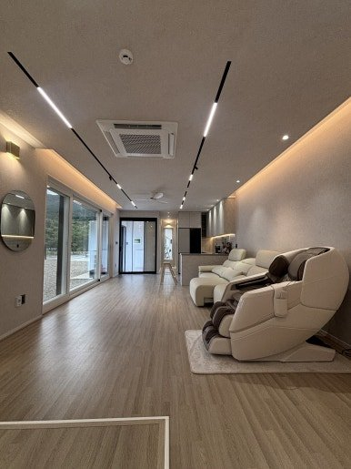
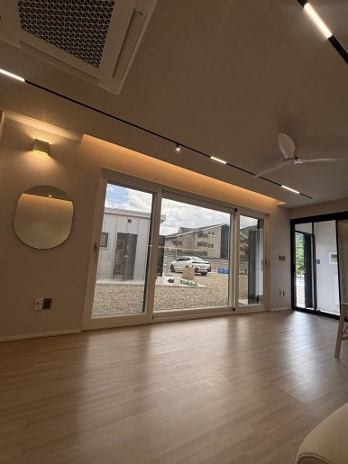
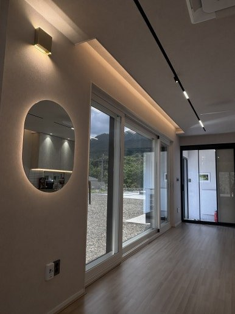
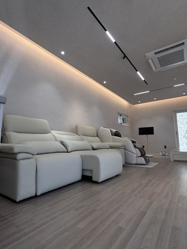
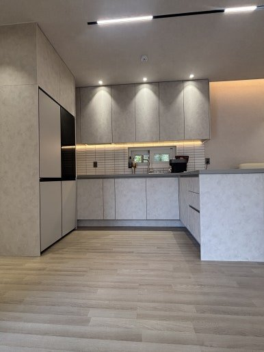
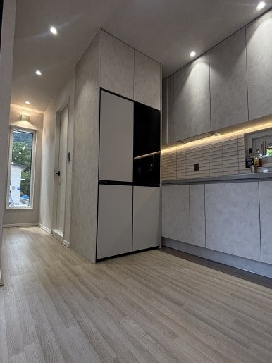
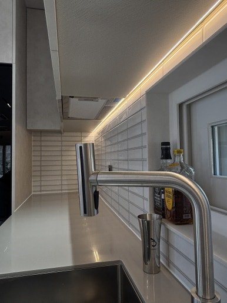
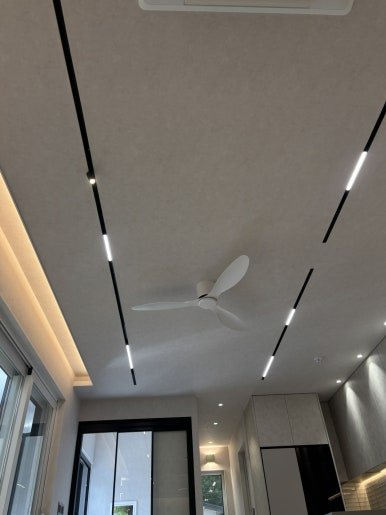
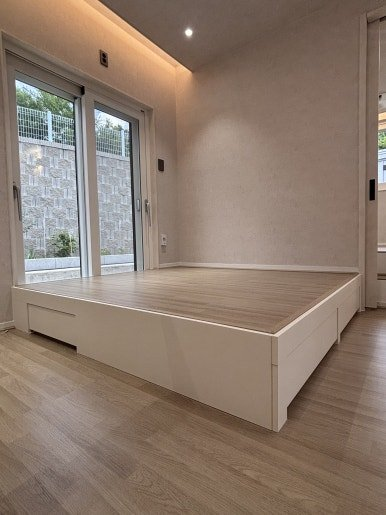
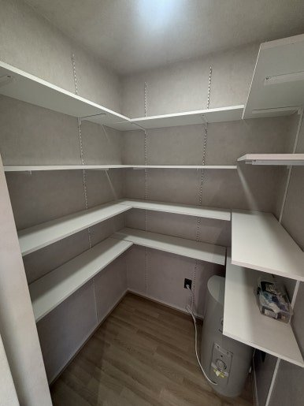
공사 과정
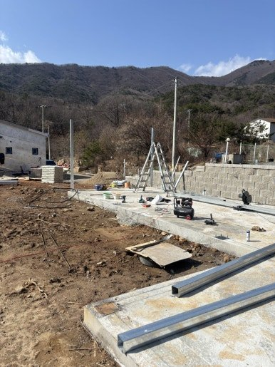
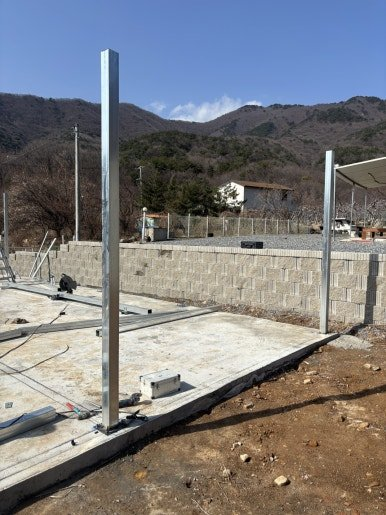
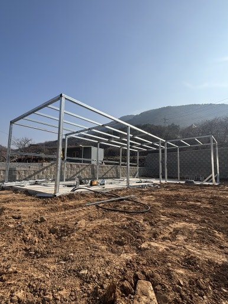
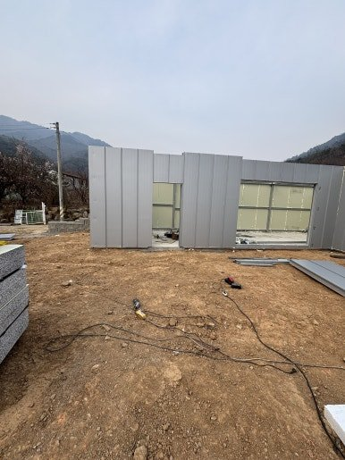
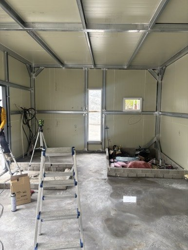
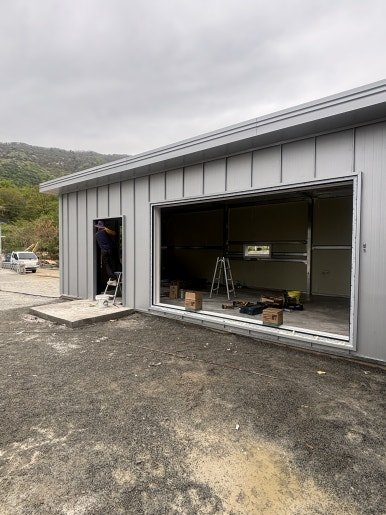
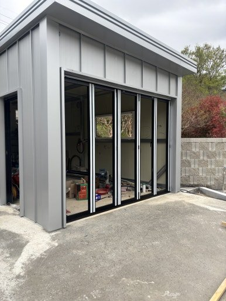
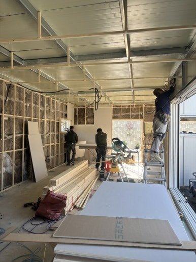
비슷한 공사를 계획하고 계신가요? 현장을 보고 설계부터 시공까지 함께 상의합니다.
상담 신청다른 작업
- 울산 브런치카페 인테리어
- 부산 강서구 대형 카페 증축 · 인테리어 · 조경
- 울산 단독주택 신축 (지하 1층)
- 울산 은편리 주택 외부공사 · 담장 · 조경
- 서울산 성원상떼빌 더 시그니처 홍보관 (견본주택) 인테리어
- 울산 구옥 빌라 전체 리모델링
- 울산 대현 더샵 2차 34평 아파트 인테리어
- 제주 카페 인테리어
- 울산 옥동 아이파크 1차 2단지 아파트 리모델링
- 울산 달동 삼성아파트 리모델링
- 울산 구영리 우미린 2차 아파트 리모델링
- 부산 반여동 롯데캐슬 아파트 리모델링
- 울산 옥동 무인 탁구장 인테리어 (탁구톡톡 옥동점)
- 필라테스 스튜디오 인테리어
- (주)벨로크 기숙사 리모델링
- 울산 달동 유림한의원 인테리어
- (주)벨로크 본사 사옥 인테리어 (1~3층)
- 울산 우방유화아파트 리모델링
- 울산 언양 월드메르디앙 건축 설계 · 투시도
- 울산 언양 한옥 단독주택 신축 (설계 · 3D · 시공)
- 울산 언양 e편한세상 유니트 3D 아이소메트릭
- 울산 장생포 고래박물관 건축 설계안
- 자동차 부품업체 덕양 쇼룸 3D 인테리어
- 상가 건물 외관 디자인 (5개 안)
- (주)벨로크 본사 층별 3D 아이소메트릭